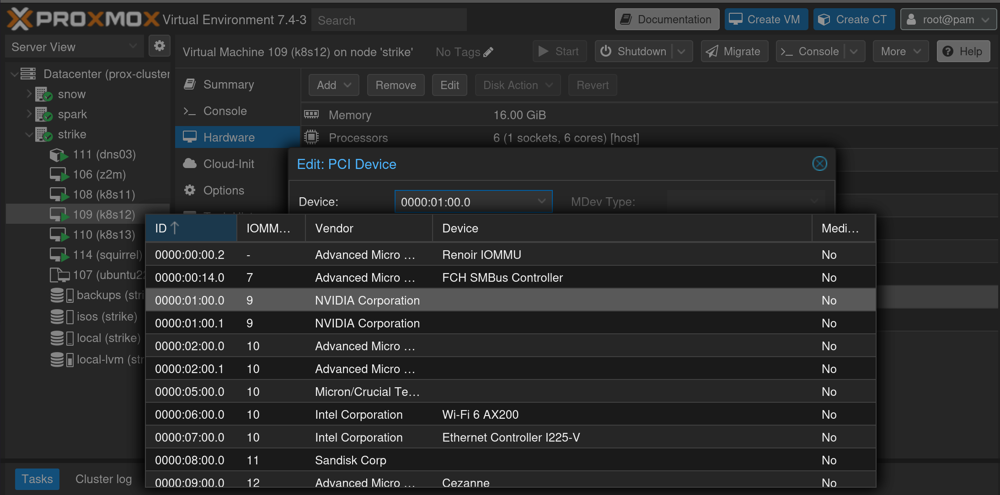
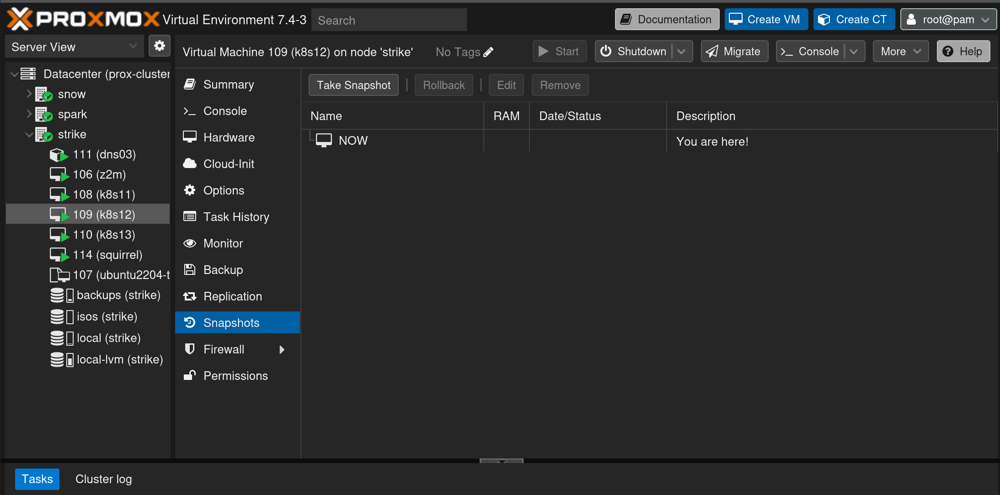
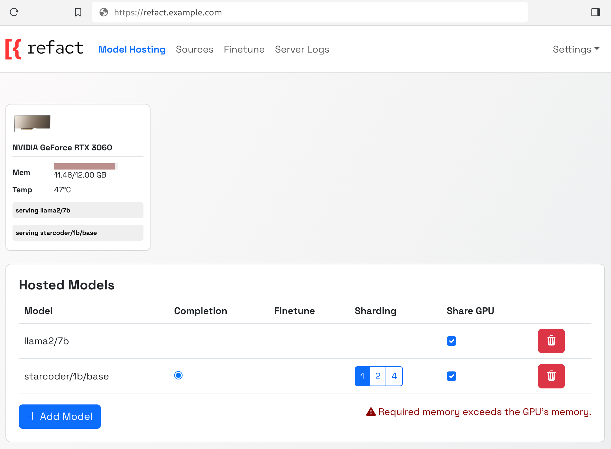
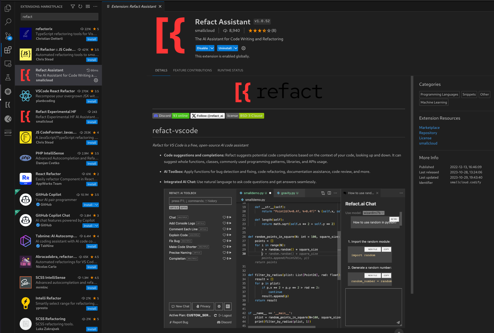
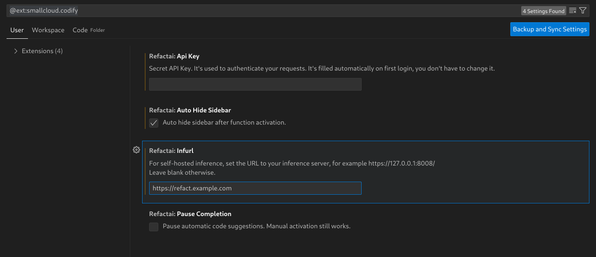
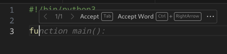
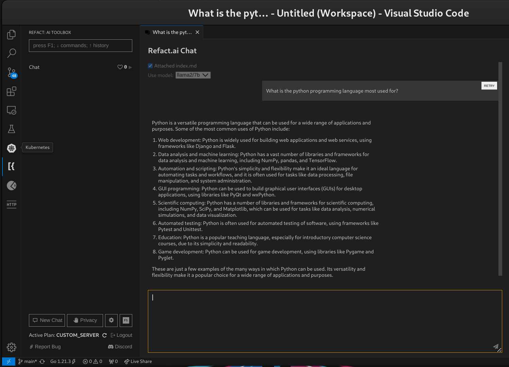

12 minutes
Kubes and GPUs
Graphics cards are once again available. The AI hype is on for sure, but it’s not as much of a craze as the the mining fad of yesteryear. Finally, graphics-based compute is semi-affordable again, especially if you look to the second hand market. Having dabbed my toes in the world of self hosting large language models I have come to realize that hosting those on CPUs only is not going to give me a good insight into what this tech is capable of. A lot of different models and APIs are either optimized or exclusively available on GPU platforms only. The one that tipped the scale for me is refact.ai. I really wanted to give the self hosted version a spin, and so I had gone on to make my wallet slimmer.
The Hardware
What GPU you should buy to get the most out of it depends on the models that you want to run on it. There do exist smaller coding-focused LLMs that can be run on a GTX 1060 6GB or an 8GB GTX 1070, which can be sniped on the second hand market for under a 100 euros. AMD has historically sold cards with higher VRAM sizes which would make their second hand units the best bargain, sadly it seems that their ROCm software platform for running AI compute tasks is still in its early days and not many, if any, consumer cards are supported at the moment.
Some of the available models and their estimated VRAM requirements:
| Model | VRAM Requirement |
|---|---|
| Refact/1.6B | ~4 GB |
| starcoder/15b/base | ~9 GB |
| wizardcoder/15b | ~9 GB |
| codellama/7b | ~14.3 GB |
I was actually about to pick up a second hand GTX 1070 with 8GB of VRAM for 90 euros when I found a good deal on a refurbished RTX 3060 12GB model and ordered immediately for 270 euros delivered. In terms of performance per euro the 1070 was a much better choice, however the 3060 has 3 things going for it:
- lower power consumption (lol nope)
- smaller physical footprint (I am trying to cram this into a mITX case)
- extra 4GB of VRAM (more VRAM more better models)
Fun fact, now that I already have the card and started writing this article, I realized that actually the 3060 has a higher peak power and similar idle numbers to the 1070… Oh well… According to techPowerUp anyway: 1070: 13W idle, 148 peak, 3060: 13W idle, 179 peak (https://www.techpowerup.com/review/evga-geforce-rtx-3060-xc/36.html).
A lot of models that I want to try out exceed the 8GB mark once loaded into RAM, notably starcoder. I was also curious to figure out what it would take to set up CUDA time sharing on a single GPU, where multiple smaller models are loaded into VRAM simultaneously. It is a shame that AMD is not an option, as they have a number of 16GB VRAM cards at a similar price to this one (RX6700XT for example), while for Nvidia we would have to jump up to an RTX 4060 16GB, which retails at around 500 euros.
The Platform
You know what you’re getting yourself into coming here right? It’s all about Kubernetes xD One of the Proxmox nodes in my server rack has a spare X16 slot that will happily house our refurb 3060, and we can pass it through to one of the Kubernetes node VMs. To do this we need to follow a few steps:
Prepare Proxmox
- Drain the node to be shut down
kubectl drain k8s12 --delete-emptydir-data --ignore-daemonsets
-
Edit the hardware definition of the node (add the new PCI device) 
-
Shut down the node so that it may pick up the hardware change
-
(optional) Make a snapshot/backup of the VM, in case we screw something up later 
-
Boot it up again
Voila, the GPU should be now available inside the VM. We can check that by running:
~ ❯ lspci octopusx@k8s12
00:00.0 Host bridge: Intel Corporation 440FX - 82441FX PMC [Natoma] (rev 02)
00:01.0 ISA bridge: Intel Corporation 82371SB PIIX3 ISA [Natoma/Triton II]
00:01.1 IDE interface: Intel Corporation 82371SB PIIX3 IDE [Natoma/Triton II]
00:01.2 USB controller: Intel Corporation 82371SB PIIX3 USB [Natoma/Triton II] (rev 01)
00:01.3 Bridge: Intel Corporation 82371AB/EB/MB PIIX4 ACPI (rev 03)
00:02.0 VGA compatible controller: Device 1234:1111 (rev 02)
00:03.0 Unclassified device [00ff]: Red Hat, Inc. Virtio memory balloon
00:05.0 SCSI storage controller: Red Hat, Inc. Virtio SCSI
00:10.0 VGA compatible controller: NVIDIA Corporation GA106 [GeForce RTX 3060 Lite Hash Rate] (rev a1)
00:11.0 Audio device: NVIDIA Corporation Device 228e (rev a1)
00:12.0 Ethernet controller: Red Hat, Inc. Virtio network device
00:1e.0 PCI bridge: Red Hat, Inc. QEMU PCI-PCI bridge
00:1f.0 PCI bridge: Red Hat, Inc. QEMU PCI-PCI bridge
- Uncordon the K8S node to re-enable scheduling on it
kubectl uncordon k8s12
Fun fact
As much as the above steps are all that I “technically” had to do should my proxmox server be correctly configured from the get go, I was getting weird behavior at the start. The graphics card was passed into the VM the first time it booted, but the driver (I installed next) would tell me there is no GPU available, even after rebooting the VM. I started messing around, thinking it is maybe some weird property of PCIe passthrough on Nvidia hardware, went on to blacklist the nvidia kernel module/drivers inside the Proxmox host to make sure it doesn’t get initialized by the host, which in turn prevented the VM I would pass it through from booting altogether. In the end I jumped into the bios of the machine to make sure all of the PCIe-related settings are in order and… of course I left the bifurcation settings on the x16 slot in the x8/x8 mode from when I was using multiple NVME drives in that slot. Changing that back and reverting all of the trial and error driver shenanigans on the host got it to work, boot and be available inside the VM every time.
Install Nvidia Drivers
Now off to install all of that dirty proprietary Nvidia stuff. We only just gave them our money, so we’ve got nothing to loose by going all the way and also giving them our souls.
Nvidia has a pretty solid guide with versions for various popular server linux flavors:
Which amounts to installing the CUDA toolkit and drivers.
- Install the CUDA toolkit
wget https://developer.download.nvidia.com/compute/cuda/repos/ubuntu2204/x86_64/cuda-keyring_1.1-1_all.deb
sudo dpkg -i cuda-keyring_1.1-1_all.deb
sudo apt-get update
sudo apt-get -y install cuda-toolkit-12-3
- Install Nvidia drivers
sudo apt-get install -y nvidia-kernel-open-545
sudo apt-get install -y cuda-drivers-545
- Install the Nvidia container runtime
The last step that we need to do to prepare our Ubuntu VM to run GPU accelerated tasks inside OCI containers is to install the Nvidia container runtime. This is a container runtime that is compatible with the OCI specification and is able to run GPU accelerated containers. It is also compatible with the Kubernetes CRI interface, which is what K3S uses to run containers. Once installed, K3S will automatically detect it once its service is restarted. You can find out the setup details (which are very simple) on the following documentation page: https://docs.k3s.io/advanced#configuring-containerd.
Since we are running K3S on Ubuntu we are using systemd-containerd and installing everything from an apt repo. Therefore we need to follow Nvidia’s instructions for enabling their container runtime for containerd, as found here: https://docs.nvidia.com/datacenter/cloud-native/container-toolkit/latest/install-guide.html#configuring-containerd. In my case that would be:
curl -fsSL https://nvidia.github.io/libnvidia-container/gpgkey | sudo gpg --dearmor -o /usr/share/keyrings/nvidia-container-toolkit-keyring.gpg \
&& curl -s -L https://nvidia.github.io/libnvidia-container/stable/deb/nvidia-container-toolkit.list | \
sed 's#deb https://#deb [signed-by=/usr/share/keyrings/nvidia-container-toolkit-keyring.gpg] https://#g' | \
sudo tee /etc/apt/sources.list.d/nvidia-container-toolkit.list \
&& \
sudo apt update
sudo apt install -y nvidia-container-toolkit
Once this is done you can run an Nvidia CUDA container to see that the runtime is functioning:
~ ❯ sudo ctr image pull docker.io/nvidia/cuda:12.2.2-base-ubuntu22.04
docker.io/nvidia/cuda:12.2.2-base-ubuntu22.04: resolved |++++++++++++++++++++++++++++++++++++++|
index-sha256:0b165c469e8b0a620ce6b22373ead52502ef06d3088ba35a6edb78582b5274f6: done |++++++++++++++++++++++++++++++++++++++|
manifest-sha256:1f0416abdf40fca3a4ce4e42093584664b4ac0dddd012571453c94e5c7a35937: done |++++++++++++++++++++++++++++++++++++++|
config-sha256:f5861cf44882f74454e1a5915647321b5b344af925503515bcd8bb0728d84551: done |++++++++++++++++++++++++++++++++++++++|
layer-sha256:aece8493d3972efa43bfd4ee3cdba659c0f787f8f59c82fb3e48c87cbb22a12e: done |++++++++++++++++++++++++++++++++++++++|
layer-sha256:4b46bd5b7766c7415446d5b866f709b45dbdb60b04fec7677343d8232ca2e427: done |++++++++++++++++++++++++++++++++++++++|
layer-sha256:f038740a8e0591897bdd6280d24e1f89690cf80c28e77c14072f84eca205c7e6: done |++++++++++++++++++++++++++++++++++++++|
layer-sha256:b2dca9da14b18f8a959e7deed652de532f88f979d8d1279511b987e294699f3c: done |++++++++++++++++++++++++++++++++++++++|
layer-sha256:998220aec9f5708b331daeb126f9d66fe39bbcc333224ca9ba6efabc9b563b7d: done |++++++++++++++++++++++++++++++++++++++|
elapsed: 7.0 s total: 83.6 M (11.9 MiB/s)
unpacking linux/amd64 sha256:0b165c469e8b0a620ce6b22373ead52502ef06d3088ba35a6edb78582b5274f6...
done: 1.00494491s
~ ❯ sudo ctr run --rm --gpus 0 -t docker.io/nvidia/cuda:12.2.2-base-ubuntu22.04 12.2.2-base-ubuntu22.04 nvidia-smi
Thu Oct 26 07:30:54 2023
+---------------------------------------------------------------------------------------+
| NVIDIA-SMI 545.23.06 Driver Version: 545.23.06 CUDA Version: 12.3 |
|-----------------------------------------+----------------------+----------------------+
| GPU Name Persistence-M | Bus-Id Disp.A | Volatile Uncorr. ECC |
| Fan Temp Perf Pwr:Usage/Cap | Memory-Usage | GPU-Util Compute M. |
| | | MIG M. |
|=========================================+======================+======================|
| 0 NVIDIA GeForce RTX 3060 On | 00000000:00:10.0 Off | N/A |
| 0% 48C P2 46W / 170W | 11651MiB / 12288MiB | 0% Default |
| | | N/A |
+-----------------------------------------+----------------------+----------------------+
+---------------------------------------------------------------------------------------+
| Processes: |
| GPU GI CI PID Type Process name GPU Memory |
| ID ID Usage |
|=======================================================================================|
| No running processes found |
+---------------------------------------------------------------------------------------+
And also, once you’ve restarted your K3S agent service, check that it also picked up the change:
~ ❯ sudo grep nvidia /var/lib/rancher/k3s/agent/etc/containerd/config.toml octopusx@k8s12
[plugins."io.containerd.grpc.v1.cri".containerd.runtimes."nvidia"]
[plugins."io.containerd.grpc.v1.cri".containerd.runtimes."nvidia".options]
BinaryName = "/usr/bin/nvidia-container-runtime"
The Deployment
In order for any container to take advantage of the nvidia containerd runtime plugin we need to create a special runtime class object, which can be referenced inside our kubernetes deployment yaml.
It looks like this:
apiVersion: node.k8s.io/v1
kind: RuntimeClass
metadata:
name: nvidia
handler: nvidia
Since (at least in my case) I am running a single GPU that is attached to a specific K8S worker VM, we need to somehow force the workloads that require access to said GPU to be deployed on that specific node. To do this we create a node label that we can then reference in the pod affinity specification:
kubectl label nodes k8s12 gpu=3060
We can check that it worked by invoking the describe command on the K8S node object:
~/ ❯ kubectl describe node k8s12 ○ teleport-k3s
Name: k8s12
Roles: worker
Labels: beta.kubernetes.io/arch=amd64
beta.kubernetes.io/instance-type=k3s
beta.kubernetes.io/os=linux
gpu=3060
kubernetes.io/arch=amd64
kubernetes.io/hostname=k8s12
kubernetes.io/os=linux
kubernetes.io/role=worker
node.kubernetes.io/instance-type=k3s
You will see that I created a label with a non-binary value. This is to make this system a little more future-proof on my side. This way I can match either on the label just “existing”, so if I want any GPU present to bind a deployment onto, or to a specific value if I want to assign a workload to a predefined model. Neat.
To make sure that our assignment mechanism works, we can spawn a test GPU benchmark container. If we did everything right this should return us a benchmark score for our GPU:
apiVersion: v1
kind: Pod
metadata:
name: nbody-gpu-benchmark
namespace: default
spec:
restartPolicy: OnFailure
runtimeClassName: nvidia
containers:
- name: cuda-container
image: nvcr.io/nvidia/k8s/cuda-sample:nbody
args: ["nbody", "-gpu", "-benchmark"]
env:
- name: NVIDIA_VISIBLE_DEVICES
value: all
- name: NVIDIA_DRIVER_CAPABILITIES
value: all
affinity:
nodeAffinity:
requiredDuringSchedulingIgnoredDuringExecution:
nodeSelectorTerms:
- matchExpressions:
- key: gpu
operator: Exists
RefactAI Chart
Now that we have checked that everything necessary to deploy refact is in place, we deploy it. Here is an example output of helm template . command for the helm chart that I created:
# Source: refact/templates/service.yaml
apiVersion: v1
kind: Service
metadata:
name: refact
labels:
helm.sh/chart: refact-0.1.0
app.kubernetes.io/name: refact
app.kubernetes.io/instance: release-name
app.kubernetes.io/version: "latest"
app.kubernetes.io/managed-by: Helm
spec:
type: ClusterIP
ports:
- port: 8008
targetPort: http
protocol: TCP
name: http
selector:
app.kubernetes.io/name: refact
app.kubernetes.io/instance: release-name
---
# Source: refact/templates/deployment.yaml
apiVersion: apps/v1
kind: Deployment
metadata:
name: refact
labels:
helm.sh/chart: refact-0.1.0
app.kubernetes.io/name: refact
app.kubernetes.io/instance: release-name
app.kubernetes.io/version: "latest"
app.kubernetes.io/managed-by: Helm
spec:
serviceName: refact
revisionHistoryLimit: 3
replicas: 1
selector:
matchLabels:
app.kubernetes.io/name: refact
app.kubernetes.io/instance: release-name
template:
metadata:
labels:
app.kubernetes.io/name: refact
app.kubernetes.io/instance: release-name
spec:
hostNetwork: true
runtimeClassName: nvidia # IMPORTANT!
dnsPolicy: ClusterFirstWithHostNet
enableServiceLinks: true
containers:
- name: refact
image: "smallcloud/refact_self_hosting:latest"
imagePullPolicy: IfNotPresent
securityContext:
privileged: false
env:
- name: "TZ"
value: "UTC+02:00"
ports:
- name: http
containerPort: 8008
protocol: TCP
volumeMounts:
- name: data
mountPath: /perm_storage
affinity: # This is how we tell it to only spawn on the node with our GPU
nodeAffinity:
requiredDuringSchedulingIgnoredDuringExecution:
nodeSelectorTerms:
- matchExpressions:
- key: gpu
operator: Exists
volumes:
- name: data
persistentVolumeClaim:
claimName: refact
---
# Source: refact/templates/ingress.yaml
apiVersion: networking.k8s.io/v1
kind: Ingress
metadata:
name: refact
labels:
helm.sh/chart: refact-0.1.0
app.kubernetes.io/name: refact
app.kubernetes.io/instance: release-name
app.kubernetes.io/version: "latest"
app.kubernetes.io/managed-by: Helm
annotations:
kubernetes.io/ingress.class: # insert your own ingress class to use
# insert any other annotations you need for your ingress controller
spec:
tls:
- hosts:
- refact.example.com
secretName: "wildcard-cert"
rules:
- host: refact.example.com
http:
paths:
- path: "/"
pathType: Prefix
backend:
service:
name: refact
port:
number: 8008
For me an extra step here would be to add refact.example.com to my local DNS to expose this ingress entry (I just add it to my PiHole server).
If all goes well, you should be able to go to refact.example.com (taking that you have DNS set up for this) you should see a screen much like this:

Here I have loaded 2 small models, one that provides code completion and one that provides chat functionality. Also, I have no idea why I am getting the VRAM warning message. It has been there for me since the beginning no matter what model I select and since everything is working for me I am going to assume it’s a UI bug…
VSCode Plugin
Let’s finally go harness the power of the AI in a practical manner. First, we install the refact.ai plugin:

Then we go to its config page to enter our local instance URL:

And off you go! Refact should now automatically start generating suggestions in your VSCode editor window as you type:

In my case, it will also allow you to chat with the llama7b model:

The End
All in all, I am quite happy with this setup. It was very straight forward and pretty much just worked. I may even sign up for their paid version just to support their project, well done refact.ai! I haven’t used this in practice much so I don’t feel comfortable giving a verdict on how good the small models that I am able to fit into my 3060’s memory are. However what I can say is that the models execute extremely fast on the RTX 3060 12GB gpu… The code generation is very fast and the llama7b models chat is pretty much instant. Much more responsive than my previous attempt at CPU hosted model and downright impressive, with such a relatively small investment in hardware. Something I really wish I was able to do is expose my llama7b model hosted by refact in other apps via an openAI API endpoint. Another would be to be able to host a single larger model that does both code completion as well as chatting. That would make me 120% happy… For the moment, I have browsed the refact’s github issue tracker as well as their discord server (https://www.smallcloud.ai/discord) which seems to be active and will see if I can find out more about the project’s roadmap and if the few functionalities that are missing will be added over time. Hope you enjoyed this tutorial and will come back again when the next entry rolls in.
2451 Words
2023-10-30 11:00